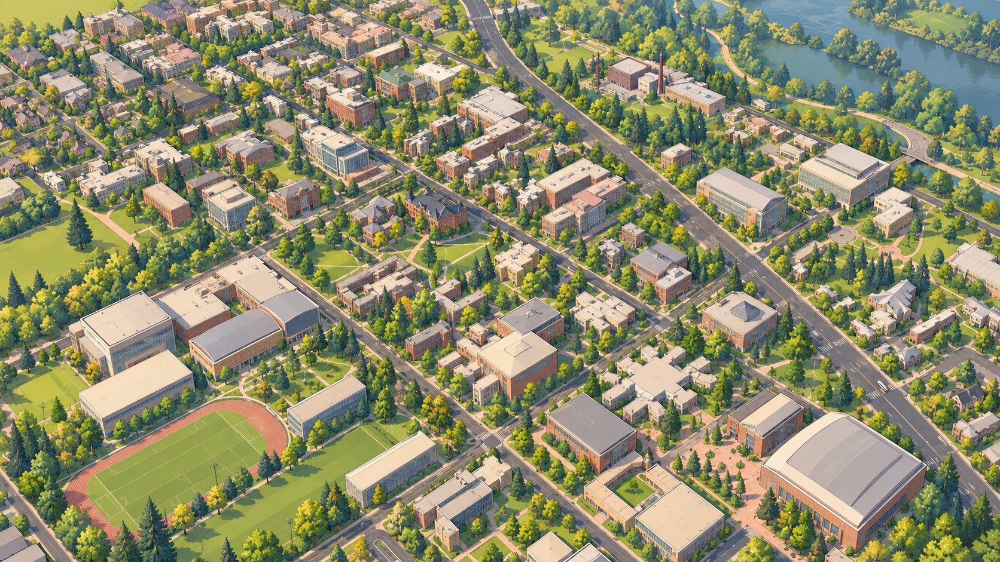

Upstream style library / UO-origin case study · v1.0 · 2026-10-31
Architectural Toon Realism
Default recommended art direction. Geographic fidelity, visual coherence and readability across scales.

Source palette · sRGB
Suggested material families, not official UO branding, measured facade colors or tested UI contrast pairs.
- Brick Red
#B96F55 - Warm Stone
#E4D6BB - Roof Gray
#A8ADB0 - Glass Blue
#8FAEAE - Grass Green
#91B66F - Foliage Green
#658B54 - Deep Evergreen
#385A45 - Path Sand
#CDBB9F
This archive records a future design direction. The UO explorer now includes a limited visual pilot; see the project documentation for its scope and measured costs. Authors are encouraged to explore other styles.